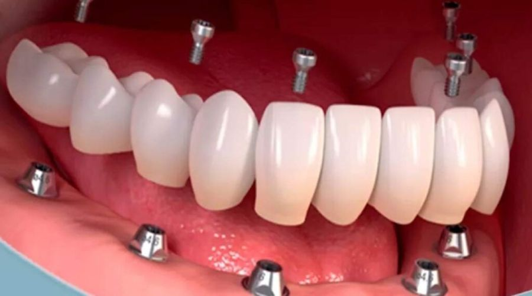
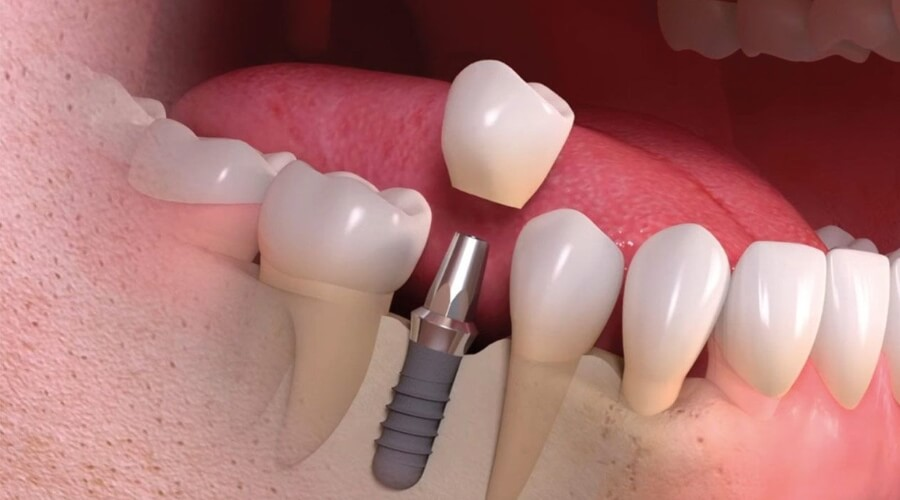

Nossa missão é cuidar do sorriso de cada paciente com excelência, oferecendo
atendimento completo em todas as especialidades da odontologia.
Lentes de Contato
O sorriso que você sempre sonhou!
As lentes de contato, também conhecidas como facetas ou laminados
dentários, são finas camadas de porcelana que são coladas na parte
frontal dos dentes para melhorar a aparência estética do sorriso. Elas
são personalizadas para cada paciente e podem ser usadas para corrigir
problemas como:
Dentes desalinhados ou tortos
Dentes manchados ou descoloridos
Dentes quebrados ou desgastados
Espaçamento entre os dentes
O resultado é um sorriso mais harmônico e natural. As lentes de contato
podem oferecer:
Uma aparência mais jovem e saudável
Maior confiança no sorriso
Melhoria na autoestima
Melhor relação entre as arcadas dentárias
Tratamentos
Aparelho Intraoral para Ronco e Apneia
O que é Aparelho Intraoral?
Um dispositivo personalizado projetado para ser usado durante o sono,
avançando a mandíbula para manter as vias aéreas abertas. Isso ajuda a
reduzir ou eliminar o ronco e a apneia do sono.
Benefícios
Reduz ou elimina o ronco e a apneia
Melhora a qualidade do sono, ajuda na recuperação da memória
Reduz a fadiga e a sonolência diurna
É uma opção não invasiva, confortável e mais barata que o cpap
Implantes Dentários: Recupere seu Sorriso e Confiança


O que são Implantes Dentários?
Os implantes dentários são uma solução inovadora para substituir dentes
perdidos ou danificados. Eles consistem em uma estrutura de titânio que
é inserida no osso da mandíbula ou maxila, servindo como base para uma
coroa dentária. Isso permite que você recupere a função e a estética do
seu sorriso.
Benefícios dos Implantes Dentários
Recuperação da Função Mastigatória: Os implantes permitem que você
mastigue e fale com confiança e naturalidade.
Durabilidade: Os implantes dentários são uma solução duradoura que
pode durar por décadas com cuidados adequados.
Conservação do Osso: Os implantes ajudam a preservar a estrutura
óssea da mandíbula ou maxila.
Melhoria da Autoestima: Recupere a confiança no seu sorriso e
melhore sua qualidade de vida.
Você é um candidato?
Recupere seu sorriso e confiança com o tratamento de implantes
dentários. Agende uma consulta conosco e descubra como podemos ajudá-lo
a alcançar o sorriso dos seus sonhos!
Bruxismo: O Mal Silencioso que Afeta a Saúde Bucal e Geral
O que é o bruxismo?
O bruxismo é um distúrbio caracterizado pelo ranger ou apertar dos
dentes, geralmente durante o sono, mas também pode ocorrer durante o
dia. Essa condição pode causar danos significativos à saúde bucal e
geral, afetando a qualidade de vida das pessoas, cada vez mais comum nos
tempos atuais.
Causas do Bruxismo
Estresse e ansiedade: O estresse e a ansiedade são considerados os
principais fatores que contribuem para o desenvolvimento do
bruxismo.
Dentes em maloclusão e hábitos como roer unhas ou mastigar objetos
podem piorar ainda mais o quadro de dor e desgaste dental.
Consequências do Bruxismo
Pode causar dor de cabeça e facial crônica, especialmente na região
das têmporas e mandíbula, dores na região do ouvido, zumbido no
ouvido, dor na região cervical, tontura, dificuldade ao abrir e
fechar a boca.
Desgaste dos dentes: O ranger e apertar dos dentes pode causar
desgaste excessivo, levando a problemas de mordida e dor.
Insônia e fadiga: O bruxismo pode perturbar o sono e causar fadiga
crônica.
Pode estar relacionado a problemas de saúde mental, como ansiedade e
depressão.
Tratamento do Bruxismo
Tratamento é personalizado de acordo com a demanda de cada caso, muitas
vezes com auxílio de placa miorrelaxante (placa de bruxismo),
recuperação da dimensão vertical (restaurar a parte dos dentes que já
foram desgastadas pelo bruxismo) e acompanhamento diário do dentista com
o paciente para que ele crie a consciência de não apertar os dentes e
aliviar as tensões.
Tratamento de Canal com Tecnologia Avançada: Rápido, Seguro e Indolor
O tratamento de canal é um procedimento odontológico que visa remover a
infecção ou dano do nervo dentário, preservando a estrutura do dente e
aliviando a dor. Com a tecnologia avançada, esse procedimento se tornou
mais rápido, seguro e indolor.
Benefícios da tecnologia avançada
Maior precisão: A tecnologia avançada permite uma maior precisão no
diagnóstico e tratamento.
Menor dor: A anestesia local e os instrumentos de alta precisão
minimizam a dor durante o procedimento.
Recuperação rápida: O procedimento é rápido e seguro, permitindo que
você retorne às suas atividades normais rapidamente.
Profissionais experientes: Nossos profissionais são experientes e
treinados para realizar o procedimento com segurança e eficiência.
Com a tecnologia avançada e uma equipe experiente, você pode confiar que
seu tratamento de canal será rápido, seguro e indolor. Agende sua
consulta hoje mesmo!
Periodontia Estética: Sorria com Confiança
O tratamento periodontal estético é um procedimento odontológico que
visa não apenas tratar as doenças periodontais, mas também melhorar a
aparência da gengiva e dos dentes. Se você está procurando por um
sorriso mais saudável e atraente, o tratamento periodontal estético pode
ser a solução certa para você.
Benefícios
Aparência mais atraente: O procedimento melhorar a forma, qualidade
e cor da gengiva, criando um sorriso mais harmonioso.
Alinhadores Estéticos: Uma Solução Moderna para Dentes Alinhados
Os alinhadores estéticos odontológicos são uma opção de tratamento
ortodôntico que utiliza aparelhos transparentes e removíveis para
alinhar os dentes. Eles são uma alternativa popular aos aparelhos
ortodônticos tradicionais, pois são mais estéticos, confortáveis e
higiênicos.
Como funcionam os alinhadores estéticos?
Os alinhadores estéticos são feitos sob medida para cada paciente,
utilizando tecnologia de impressão 3D e software de planejamento de
tratamento. Eles são projetados para aplicar uma pressão suave e
constante nos dentes, movendo-os gradualmente para a posição desejada
com muita previsibilidade.
Sobre Nós
D'Amico Odontologia
Nossa missão é cuidar do sorriso de cada paciente com excelência,
oferecendo atendimento completo em todas as especialidades da
odontologia. Trabalhamos com foco na prevenção e no diagnóstico preciso,
utilizando tecnologia e conhecimento de ponta para promover saúde bucal
e bem-estar. Cada tratamento é planejado de forma personalizada, porque
acreditamos que cada sorriso é único e merece um cuidado especial.